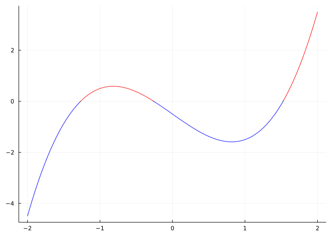
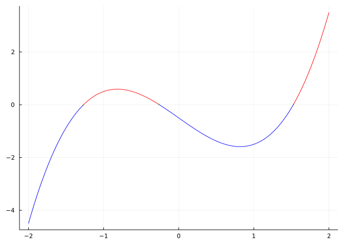
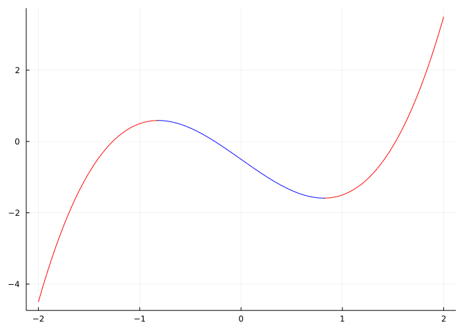
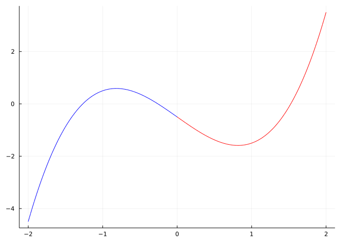
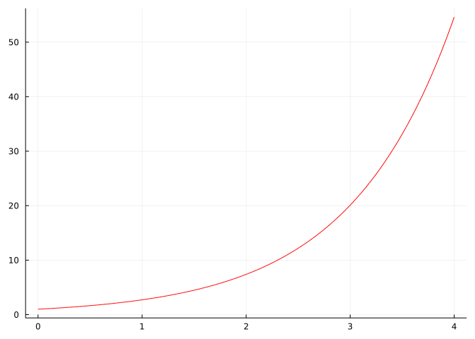
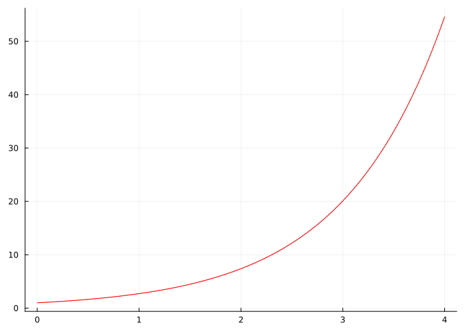
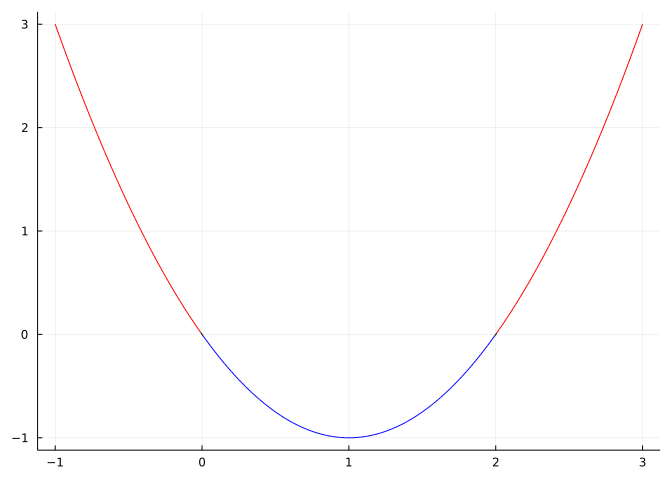
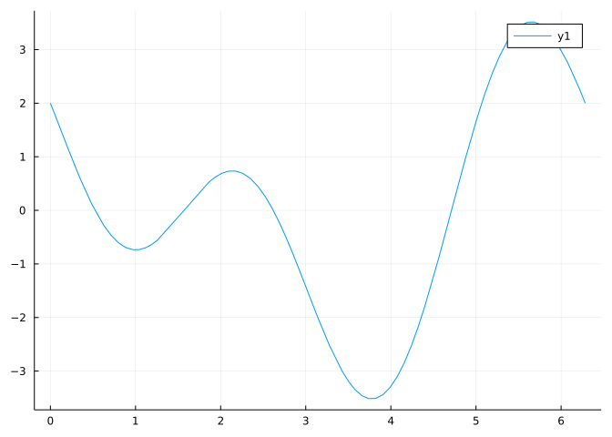
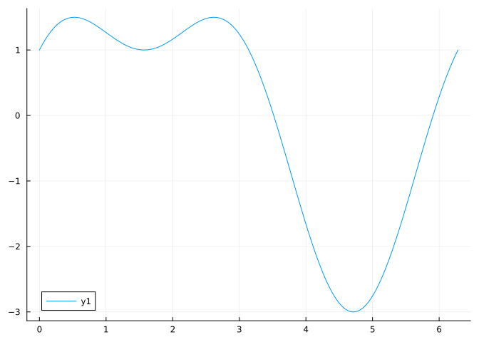

f(x) = x^3 - 2x - 1/2
plotif(f, f, -2, 2)
A notebook for this material: ipynb (Pluto html) (With commentary)
This project explores the relationship between a function, \(f(x)\) and its first and second derivatives.
The following definitions describe features of functions over an interval:
There are similar definitions for negative, decreasing, and concave down.
You may be more familiar with these implications for functions with derivatives:
Pay attention to the difference between positive and non-negative. For example, an increasing, differentiable function on I=(a,b) is only guaranteed to have a non-negative derivative – not a positive derivative on I.
We load MTH229 to provide access to graphing, the ' notation, and the plotif function:
using MTH229
using PlotsThe plotif function from the MTH229 package makes it easy for us to highlight when a function is positive. This function (plotif(f, g, a, b)) plots the function \(f(x)\) twice over [a,b], the second time doing so only if \(g(x) \geq 0\).
We can plot when a function is positive by using f for g. For example, when \(f(x) = x^3 - 2x - 1/2\) we make the plot
f(x) = x^3 - 2x - 1/2
plotif(f, f, -2, 2)
In this graph, we estimate graphically that the intervals \((-1.2, 0.2)\) and \((1.5, 2)\) are where \(f\) is positive within this viewing window.
We can do the same with the derivative, then our graph will show when the function is increasing:
plotif(f, f', -2, 2)
Again, we eyeball from the graph to estimate that this occurs on \((-2, -0.8)\) and \((0.8, 2)\).
And of course, using when the second derivative is positive shows where f is concave up:
plotif(f, f'', -2, 2)
We can see the function is concave up on \((0, 2)\).
Graphically identify when the function \(f(x) = x^x\) is increasing on \((0,2)\)
Graphically identify when the function \(f(x) = \sqrt{|1 - x^2|}\) is increasing on the interval \([-2, 2]\).
Graphically identify when the function \(f(x) = x^2 \cdot e^{-x}\) is concave up on the interval \((0,10)\).
Suppose we only know indirect things about a function \(f(x)\), how much can we say?
We previously mentioned two basic relationships:
If \(f'(x) > 0\) on an interval \((a,b)\) then the function \(f(x)\) is increasing on \((a,b)\). (It may also increase when \(f'(x)=0\), but it isn’t guaranteed.)
If \(f''(x) > 0\) on \((a,b)\) then the function \(f(x)\) is concave up on \((a,b)\).
Similar statements can be made for negative values of the derivative and second derivative.
For example, lets suppose we know that the derivative of \(f(x)\) is \(f'(x) = \exp(x)\). What can we say about \(f(x)\) on the interval \((0,4)\)?
We make two graphs:
fp(x) = exp(x)
plotif(fp, fp, 0, 4)
plotif(fp, fp', 0, 4)
From the graphs we see that \(f'(x)\) is always positive and increasing.
From the first fact (\(f'(x) > 0\)) we know that \(f(x)\) is increasing on this interval.
From the second fact (\(f'(x)\) is increasing) we know that \(f(x)\) is concave up on this interval.
Do we know any specific values, or even less ambitiously, when \(f(x)\) is positive? The answer must be no – we could always add a constant to \(f(x)\) and not effect its derivative.
Now suppose we have a different \(f(x)\). In this case all we know is the second derivative is \(f''(x) = x^2 - 2x\). What can we say about \(f(x)\) on the interval \((-1,3)\)?
A plot to see where the second derivative is positive will show that this \(f''(x)\) is positive on \((-1, 0)\) and \((2,3)\):
fpp(x) = x^2 - 2x
plotif(fpp, fpp, -1, 3)
This means \(f(x)\) is concave up on these same intervals.
Can we tell if our unknown \(f(x)\) is increasing? Nope, we have no such ability. We could always add a term \(mx\) to \(f(x)\) and keep the same second derivative. So we can’t tell if the function \(f(x)\) is increasing and we can’t tell where the function \(f(x)\) is positive, but we can say where it is concave up when we all we know is a second derivative.
You know that \(f'(x) = |x|\). Over \([-1,1]\) where if \(f(x)\) increasing and where is it concave up?
Suppose \(f'(x) = (x^4 - x^2 + 2)/(x^4 - 2x^2 + 1)\). When is \(f(x)\) increasing on \((-2, 2)\)?
If \(f'(x) = \tan(x) - 3x/2\). When is \(f(x)\) concave down on the interval \((-\pi/3, \pi/3)\)?
The first- and second-derivative tests are a means to classify if a critical point is also a local extrema. A local extrema will always correspond to a critical point – but not necessarily vice versa. There are two theorems that ensure a critical point will be a local extrema:
The first derivative test
If \(c\) is a critical point and \(f'(x)\) changes sign at \(x=c\), then \((c,f( c))\) will be a local extrema. (If the sign change is from positive to negative, it will be a local maximum.) If there is no sign change, the critical point is not a local extrema.
The second derivative test
If \(c\) is a critical point and \(f''(x) \neq 0\) then \((c,f( c))\) will be a local extrema. If \(f''( c) > 0\) this will be a local minimum and if \(f''( c) < 0\) a local maximum. (Nothing conclusive can be said when \(f''(c)=0\).)
For example, let \(f(x) = 2\sin(x) + \cos(2x)\). Find all critical points on \([0, 2\pi]\).
As \(f(x)\) is everywhere differentiable, these critical points would be where the derivative is \(0\). A plot helps us identify how many and roughly where:
f(x) = 2sin(x) + cos(2x)
plot(f', 0, 2pi)
We see four: one near 0.8, one near 1.5, one near 2.5 and one near
find_zeros to identify:cps = find_zeros(f', 0, 6)4-element Vector{Float64}:
0.5235987755982988
1.5707963267948966
2.617993877991494
4.71238898038469Use the first derivative test to classify these values as relative maximum or minimum. From the graph of f' we see at the first one the derivative is changing sign from positive to negative at the first one (hence a local maximum), and this alternates as we go along.
The MTH229 package has a sign_chart function to do check numerically for sign changes of a function:
sign_chart(f', 0, 4)3-element Vector{NamedTuple{(:DNE_0_∞, :sign_change), Tuple{Float64, String}}}:
(DNE_0_∞ = 0.5235987755982988, sign_change = "+ → -")
(DNE_0_∞ = 1.5707963267948966, sign_change = "- → +")
(DNE_0_∞ = 2.617993877991494, sign_change = "+ → -")So by the first derivative test we have a max, min, max, min which we see when we plot f:
plot(f, 0, 2pi)
To get the same from the second derivative test, we evaluate \(f''(x)\) at these four points:
f''.(cps)4-element Vector{Float64}:
-3.0000000000000004
2.0
-2.9999999999999982
6.0(Using the dot broadcasts f'' over all the values in cps.)
If you wanted something fancy, you could convert using sign:
["max", "can't tell", "min"][2 .+ Int.(sign.(f''.(cps)))]4-element Vector{String}:
"max"
"min"
"max"
"min"Let \(f'(x) = x^4 - 4x^2 + 1\). Classify all relative extrema of \(f(x)\) on the interval \((-1, 1)\).
Let fp(x) = (2x-1)/cbrt(x^2 - x - 2)^2. Over the interval \((-1.5,1.5)\) identify all relative maxima and minima of \(f(x)\).
Suppose, \(f(x)\) has a critical at \(0\) and \(1\). If possible, classify them as relative maximum or minimum assuming \(f''(x) = 1 - 2x - \sin(x)\)